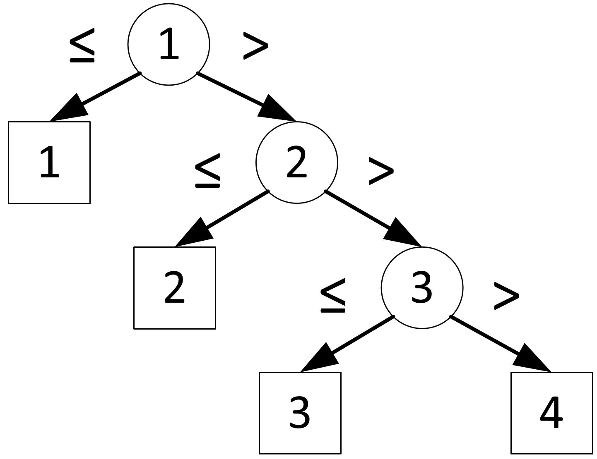
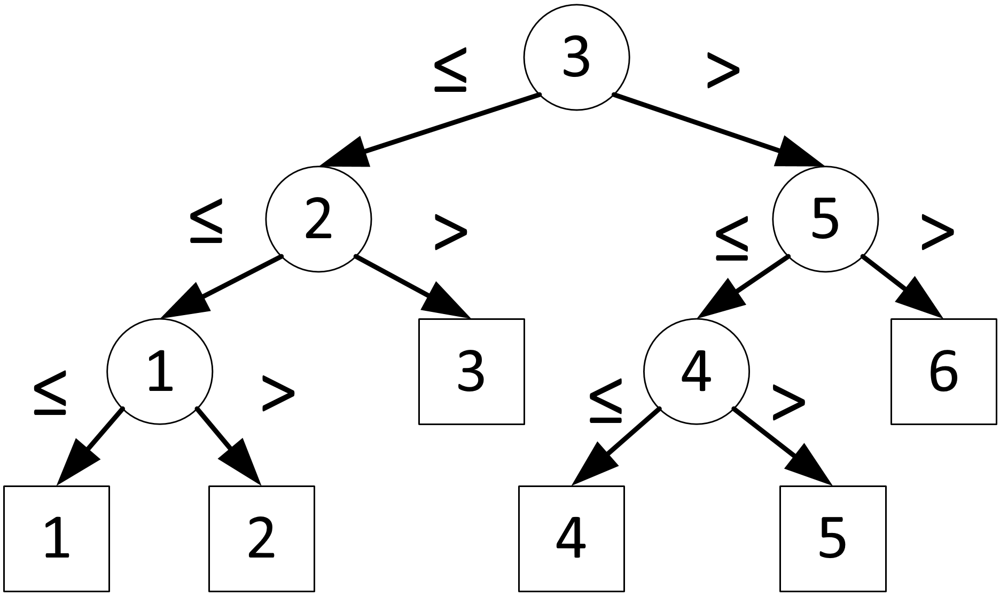

Алгоритм — набор инструкций, описывающих порядок действий исполнителя для решения определённой задачи
$L_A(N)$ — функция сложности алгоритма
$L_A(N) = max(L_A(x_i)), x = 1..N$
Функция $L_A(N)$ возвращает сложность алгоритма, выраженную в:
Дано:
Найти: $i$, такое, что $a_i = x$
Тривиальным решением задачи является алгоритм линейного поиска:
$L_A(N) = N - 1$
Алгоритм поиска для фиксированного количества элементов можно представить двоичным деревом решений, в котором:


Попробуем выразить сложность $L_A(N)$ для алгоритма двоичного поиска, для этого воспользуемся деревом: